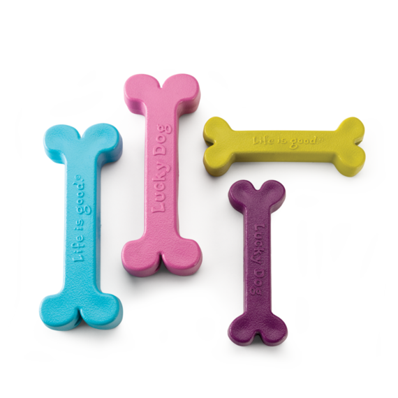
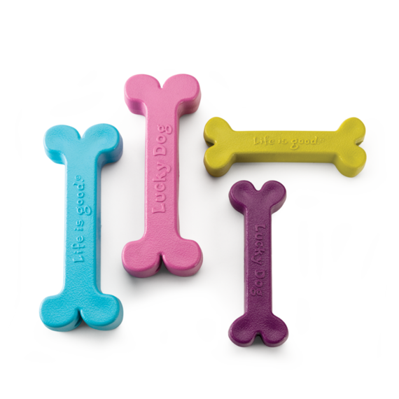
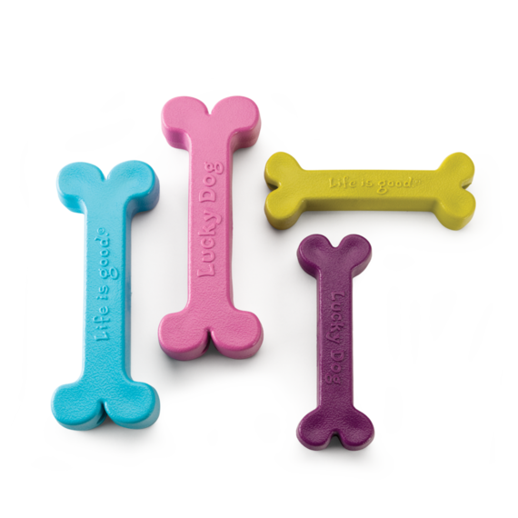
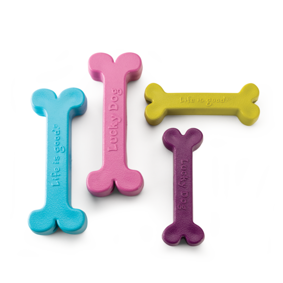
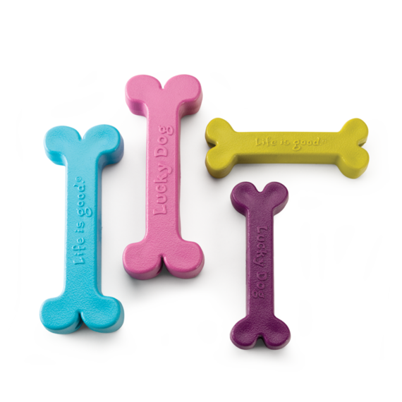

Início
Serviços
Fale Conosco
Cadastre seu pet
PetShop
A melhor opção para seu pet, mostre para eles que você os ama.
Produtos

Noticías
4 mil beagles resgatados nos EUA esperam por adoção.
VÍDEO: Cachorros participam de campeonato de surfe na Califórnia
Filhotes de gato abandonados na porta de Centro de Zoonoses ganham ‘mãe de leite’ no extremo sul da Bahia
 

 
